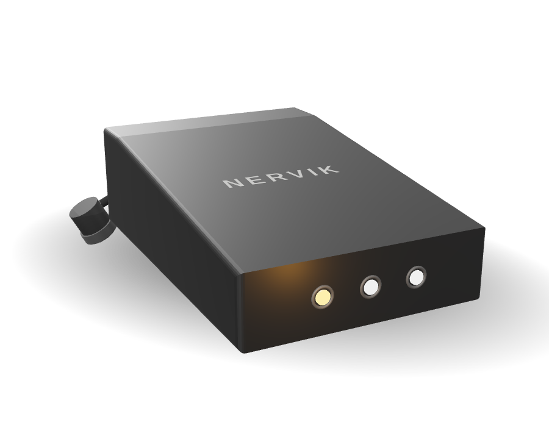
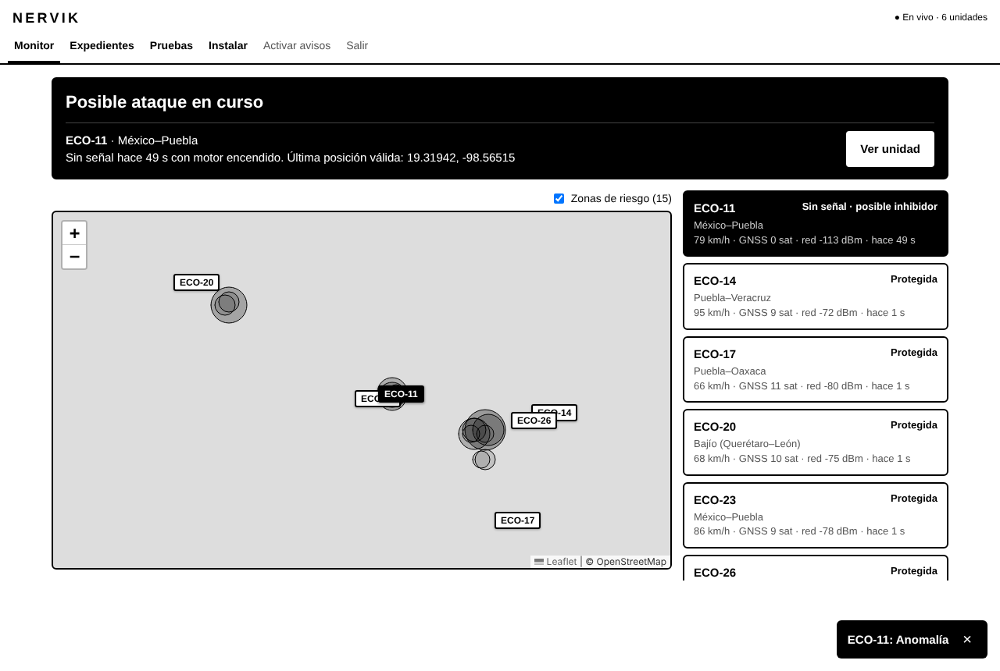
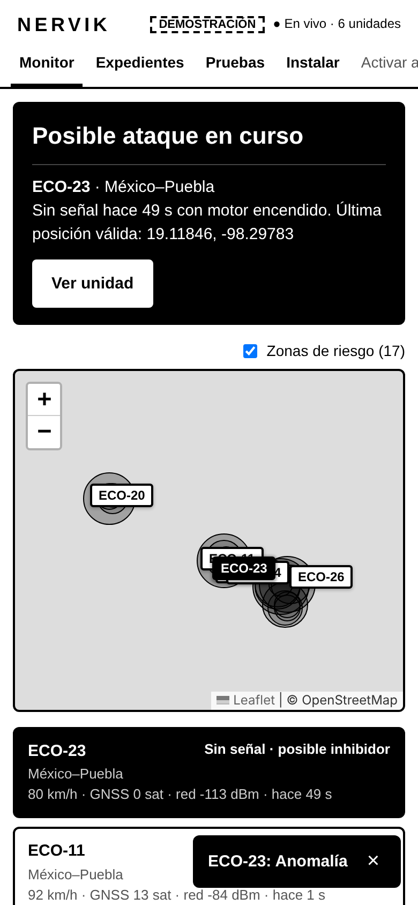

Hoy, durante un ataque
- El GPS deja de reportar. La central ve el último punto y nada más.
- La unidad se detiene. Nadie se entera.
- El operador logra llamar. Ya no hay a quién perseguir.
- La aseguradora pide pruebas y solo hay un hueco en el mapa.
Un equipo en la cabina reconoce el ataque con inhibidor aunque no haya GPS ni red celular, avisa a tu central y guarda un expediente firmado que tu aseguradora puede comprobar.

Un inhibidor de señal apaga el GPS y la red de la unidad. Durante esos minutos nadie sabe qué está pasando, y después no hay cómo demostrarlo ante la aseguradora.
$7,000 Mde pesos, o más, se pierden por robo al autotransporte de carga, según AMESIS
4,103tractocamiones asegurados robados entre octubre de 2024 y septiembre de 2025, según AMIS
8 de cada 10robos al transporte de carga son con violencia, según AMESIS
Fuentes: AMESIS citada por Forbes México (2025–2026); AMIS citada por El Economista.
Sin perforar ni cortar cables. Funciona aunque la unidad pase horas sin cobertura.
Al conector verde de 9 pines del tractocamión, con dos cinchos bajo el tablero. La app hace una prueba automática de 30 segundos.
Su inteligencia artificial revisa la calidad de cada satélite, la red celular y el movimiento del camión, segundo a segundo.
Si reconoce un inhibidor, avisa en cabina y a tu central, y guarda la evidencia aunque se quede sin conexión.
Al regresar la señal envía un expediente firmado que nadie puede alterar después.
En un túnel los satélites desaparecen de golpe y regresan al salir. Un inhibidor los va hundiendo a todos al mismo tiempo mientras la unidad sigue en marcha. Esa diferencia es la que Nervik reconoce.
Una luz, un significado. Las tres luces fijas del equipo dicen que la unidad está protegida: energía, comunicación y alerta.
La app de monitoreo responde una pregunta: ¿alguna unidad está siendo atacada ahora? En computadora y en celular, sin descargar nada de una tienda.


Mapa de la flota, zonas de riesgo por tramo y aviso con sonido cuando una unidad deja de reportar con el motor encendido.
La línea de tiempo de cada ataque, que tu aseguradora puede verificar y descargar.
Diagnóstico de cada equipo desde la app: satélites, red, energía, memoria y luces.
Pagas una vez el dispositivo y cada mes el plan de cada unidad. La app, la conectividad y los expedientes firmados vienen dentro del plan.
$1,800 por unidad, pago único, instalado
$300 por unidad al mes
Hoy el riesgo de una flota se mide con el GPS del propio asegurado, que se queda ciego justo durante el ataque.
Cada expediente va firmado por el equipo y encadenado al anterior. Se verifica con su llave pública, sin confiar en Nervik ni en el transportista.
Frecuencia de ataques por tramo y horario, para ajustar o condicionar pólizas con datos.
Instalación en las unidades de mayor riesgo de tus clientes como parte de la colocación.
No, se suma a él. Tu GPS sigue rastreando; Nervik cubre el momento en que el GPS deja de funcionar por el inhibidor y deja constancia de lo que pasó.
No, y es a propósito. El equipo solo escucha el bus del vehículo. Detener una unidad en carretera puede poner en riesgo al operador y genera responsabilidad legal.
La app de monitoreo para tu central, la conectividad celular del equipo, los expedientes firmados, las pruebas a distancia y el reporte de riesgo para tu aseguradora. Se paga por cada unidad.
Haces tu pedido en el carrito y eliges tarjeta, Mercado Pago o transferencia. Te enviamos la liga de pago o los datos de transferencia con tu folio. La página no cobra ni guarda datos de tarjeta.
La desconexión queda registrada y la batería de respaldo mantiene el registro. La forma en cuña y el cable con prensaestopa dificultan retirarlo rápido.
Estamos validando el formato con aseguradoras durante el piloto. El expediente se puede verificar de forma independiente con la llave pública del equipo.
En tractocamiones con conector de diagnóstico de 9 pines (J1939), el estándar en clase 8. Si tu unidad tiene otro conector, cuéntanos en el formulario de contacto.
Nervik nace en el curso Proyecto de Ingeniería IV de la IBERO Puebla, de un equipo de tres estudiantes de ingeniería: Andrik, Juan Pablo y Mauro. Empezó cuando a un familiar de uno de nosotros le robaron la carga mientras manejaba.
Documentamos cada semana del desarrollo: la búsqueda de la oportunidad, las entrevistas, el diseño del equipo, los costos y los prototipos.
Ver la bitácora por semanasCotizaciones para tu flota, demostraciones, convenios con aseguradoras o soporte.